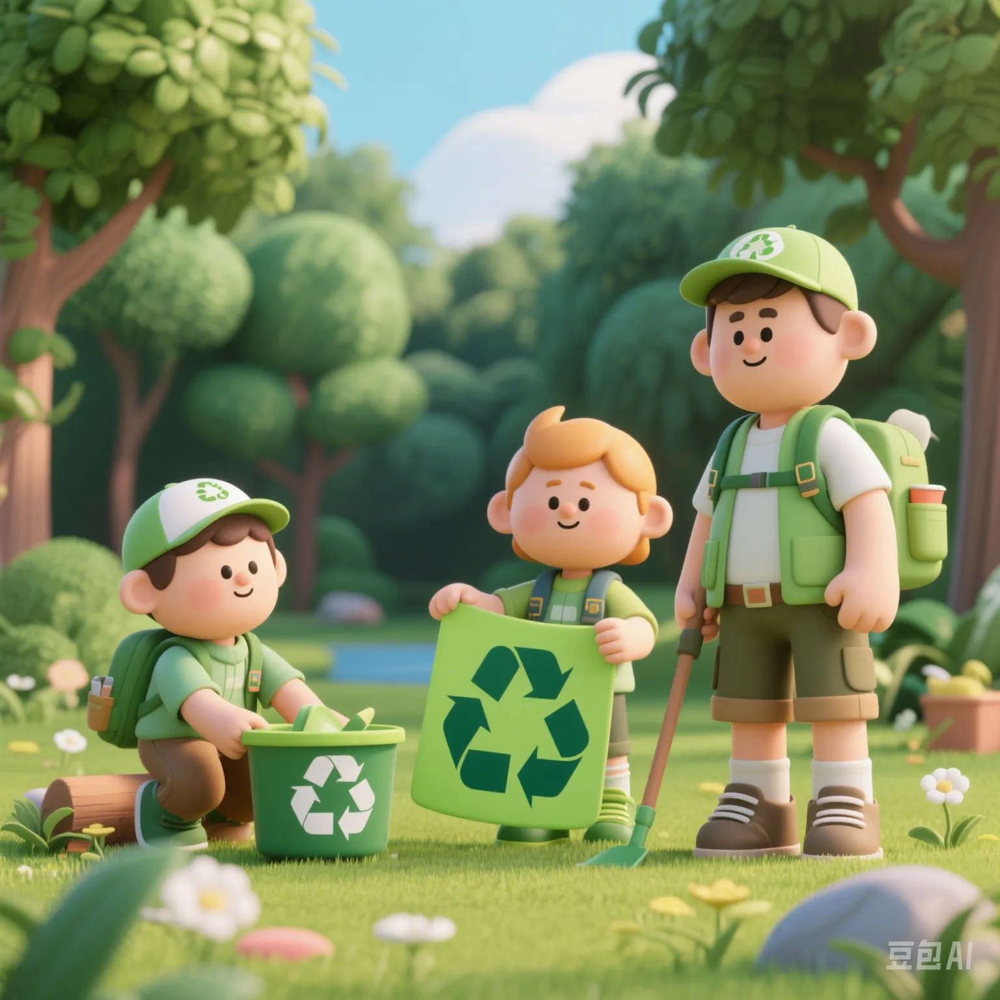

Is Global Environmental Anxiety on the Rise? A Deep Comparison of Behavior and Attitude Big Data
PeaceLove.Top Insights :2025-04-17
🌍 In 2025, Environmental Anxiety Has Become a Global Resonance
According to the latest data released by the Global Environmental Research Alliance:
Survey Item | Global Average Proportion
Expressing 'extreme concern about climate change' | 71%
Considering themselves 'with strong environmental awareness' | 62%
Actually adhering to an environmental lifestyle (> 5 habits) | 28%
The huge gap between 'cognition' and 'behavior' is the truth behind 'environmental anxiety'.
🌡️ Which Countries Are the Most Anxious? Which Countries Take the Most Actions?
Rank | Country | Environmental Anxiety Index | Actual Green Action Score | Gap between Anxiety and Action
1 | Sweden | 78 | 82 | - 4
2 | South Korea | 81 | 59 | + 22
3 | China | 77 | 65 | + 12
4 | USA | 74 | 46 | + 28
5 | India | 68 | 37 | + 31
Sweden: Tops the world in both environmental awareness and action!
USA: Big talk but little action?
♻️ The 'Top 5' Triggering Scenarios for Environmental Anxiety
Scenario | Trigger Rate | High - frequency Expressions from Netizens
Seeing videos of piled - up garbage | 63% | 'It feels like humanity is really doomed...'
Buying disposable plastic products | 57% | 'I know it's bad, but still...'
Using excessive packaging from takeaways/express deliveries | 54% | 'Do I have to bear all this plastic just to order a meal?'
Being reminded by the carbon - emission display when a flight takes off | 48% | 'I'm just going home. Why do I feel so guilty?'
Being questioned about 'non - environmental' behavior by others | 41% | 'Being morally judged is more uncomfortable than emitting carbon...'
📦 The Top 5 Behaviors That the Public Most Wants to Change but Finds Hard to Change
Behavior Item | People Who Say 'Want to Change' | People Who Say 'Successfully Persisted'
Reducing the use of takeaways/packaging | 76% | 21%
Sorting garbage every day | 71% | 33%
Driving less/cycling for commuting | 66% | 19%
Reducing meat intake | 58% | 11%
Refusing to buy fast - fashion/low - cost clothes | 53% | 8%
'Think a lot about environmental protection, but hard to stick to actions'
'Especially when hungry, in a hurry, or when there are discounts...'
🧠 Three Psychological Types of Environmental Anxiety
Type | Proportion | Characteristic Keywords | Countermeasure Suggestions
Cognitive Anxiety | 42% | Rich in knowledge, emotionally stable, but little action | Set 'feasible small' environmental challenges
Emotional Anxiety | 35% | Prone to self - blame, escalating anxiety | Join offline or online environmental communities
Repressed Anxiety | 23% | Denial, numbness, avoiding talking about environmental protection | Use 'gamification' methods to stimulate participation interest
✅ 'Environmental Small Goals Ranking': The Top Five Most - Checked - In Actions by Users in 2025
Environmental Behavior | Daily Active Check - In Users (Global) | Remarks
Bringing your own cup/not using plastic bottles | 28 million | Subways and cafes are the main check - in points
Second - hand trading/reselling old items | 17 million | Z - generation women have the highest participation rate
Meatless Day per week | 15 million | Has become the default culture in European workplaces
Not ordering takeaways with packaging/using fewer lunch boxes | 12 million | The check - in rate has soared in East Asian regions
Making a green public - welfare donation once a month | 9 million | The average donation amount is $3 per time
Conclusion: Environmental Anxiety Is Not a Bad Thing, but Don't Let It 'Paralyze' Us
Environmental protection is not about perfectionism, but starting from a single bag, a single bike ride, or ordering one less meal. Your small actions will eventually accumulate into perceptible changes.